Rohan Armor Set
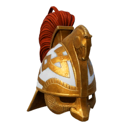
Rohan Helmet
x2 Shanôr Ingot
x1 Leather
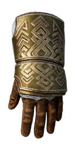
Rohan Gauntlets
x3 Shanôr Ingot
x1 Leather
x2 Numenorean Cloth
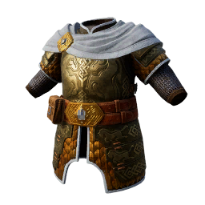
Rohan Armor
x4 Shanôr Ingot
x4 Leather
x3 Numenorean Clot
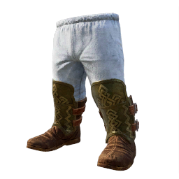
Rohan Boots
x2 Shanôr Ingot
x2 Leather
x4 Numenorean Cloth
Unlocking Requirements
To be able to craft Rohan Armor Set you must build Rohirrim Banner
Crafting Station
Rohan Armor Set can be crafted in Great Belegost Forge
Skinbark Armor Set
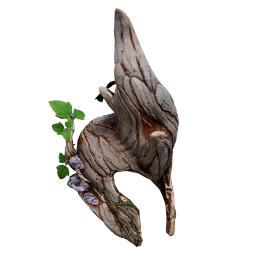
Skinbark Crwon
x2 Entwood
x2 Elven wood
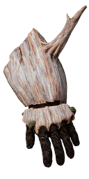
Skinbark Gloves
x2 Entwood
x2 Elven wood
x2 Leather
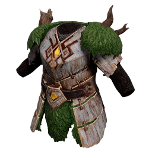
Skinbark
x4 Entwood
x8 Elven wood
x2 Leather
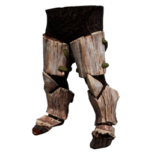
Skinbark Boots
x2 Entwood
x4 Elven wood
x2 Leather
Unlocking Requirements
To be able to craft Skinbark Armor Set you must build Wellingspring
Crafting Station
Skinbark Armor Set can be crafted in Great Forge of Narvi
Orc Hunter Armor Set
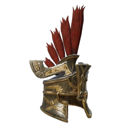
Orc Hunter's Galea
x2 Khazâd Steel Ingot
x1 Troll Hide
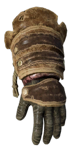
Orc Hunter's Gloves
3 Khazâd Steel Ingot
x1 Troll Hide
x1 Rukhus Skull
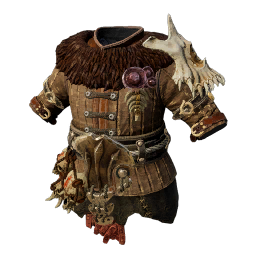
Orc Hunter's Mantle
x4 Khazâd Steel Ingot
x3 Troll Hide
x1 Rukhus Skull
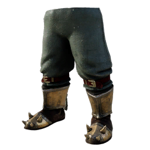
Orc Hunter's Boots
x2 Khazâd Steel Ingot
x1 Troll Hide
x1 Rukhus Skull
Unlocking Requirements
To be able to craft Orc Hunter Armor Set you must build Rukhus Spike
Crafting Station
Orc Hunter Armor Set can be crafted in Great Nogrod Forge
Beorn Armor Set

Name
x3 Fine Cloths
x3 Fine Leather
Name
x2 Fine Cloths
x2 Fine Leather
Name
x4 Fine Cloths
x4 Fine Leather
Name
x4 Fine Cloths
x4 Fine Leather
Unlocking Requirements
To be able to craft Beorn Armor Set you must build [Redacted]
Crafting Station
Beorn Armor Set can be crafted in [Redacted]
Lord of Moria Armor Set
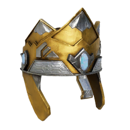
Lord's Coronet
x2 Mitrhill Ingot
x1 Gold Ingot
x2 Star-metal Ingot
x3 Sapphire
x1 Fine Leather
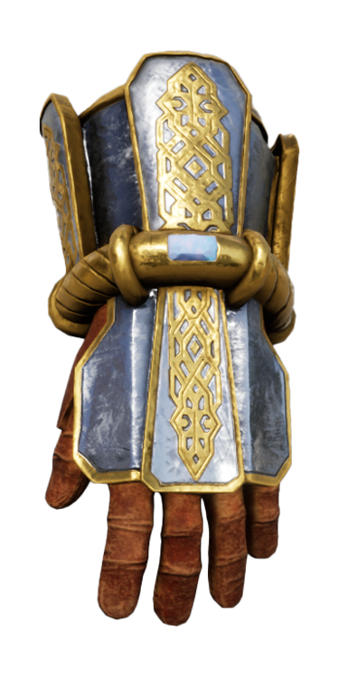
Lord's Coronet
x4 Mitrhill Ingot
x2 Gold Ingot
x4 Star-metal Ingot
x2 Sapphire
x4 Fine Leather
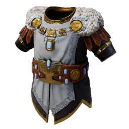
Lord's Armor
x5 Mitrhill Ingot
x3 Gold Ingot
x6 Star-metal Ingot
x4 Sapphire
x3 Fine Leather
x4 Fine Cloth
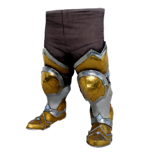
Lord's Boots
x3 Mitrhill Ingot
x4 Gold Ingot
x8 Star-metal Ingot
x1 Sapphire
x3 Fine Leather
x3 Fine Cloth
Unlocking Requirements
To be able to craft Lord of Moria Armor set you must discover Mithril Helmet, Mithril Glovest, Mithril Armor, Mithril Slippers
Crafting Station
Lord of Moria Armor set can be crafted in Great Mithril Forge
Origin Set
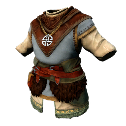
Blue Mountains Outfit
x10 Cloth Scraps
x4 Hide
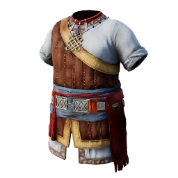
Coastal Mountains Outfit
x10 Cloth Scraps
x4 Hide
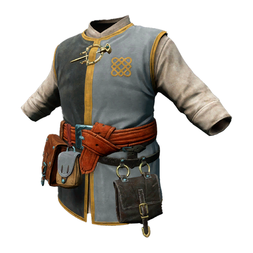
Glittering Caves Outfit
x10 Cloth Scraps
x4 Hide
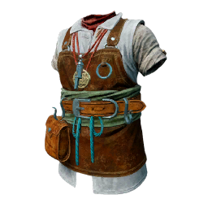
Iron Hills Outfit
x10 Cloth Scraps
x4 Hide
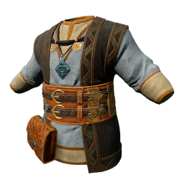
Loneley Mountains Outfit
x10 Cloth Scraps
x4 Hide
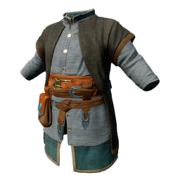
Red Mountains Outfit
x10 Cloth Scraps
x4 Hide
Unlocking Requirements
To be able to craft Rohan Armor you must discover Hide
Crafting Station
Rohan Armor Set armor set can be crafted in Workbench